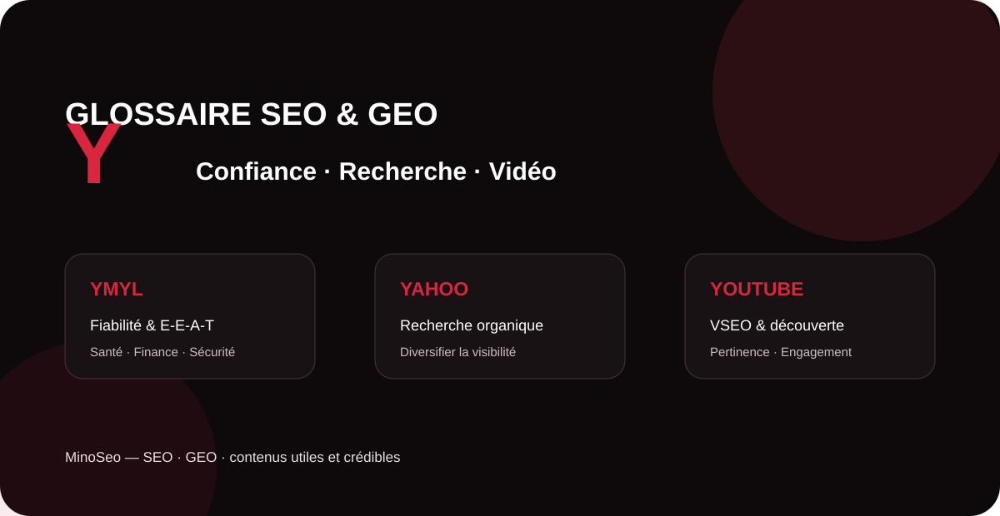

La lettre Y rassemble ici trois concepts très différents mais stratégiques. YMYL concerne les contenus capables d’avoir un impact important sur la vie des internautes ; Yahoo rappelle qu’une stratégie de visibilité ne se limite pas toujours à un seul moteur ; YouTube ouvre le référencement à la recherche vidéo, aux recommandations et à une présence de marque multimédia. Ce guide présente leurs définitions et leurs implications concrètes pour le SEO et le GEO.

YMYL your money your life
YMYL signifie Your Money or Your Life. Google utilise cette notion pour désigner les sujets dont le contenu peut avoir un impact significatif sur la santé, la stabilité financière ou la sécurité des personnes, ainsi que sur le bien-être de la société. Les informations médicales, certains conseils financiers, la sécurité ou des décisions majeures de la vie peuvent donc demander un niveau particulièrement élevé de fiabilité.
YMYL n’est pas une balise à ajouter à une page et ce n’est pas non plus un « score SEO » visible. C’est surtout un cadre permettant de comprendre pourquoi la confiance est déterminante sur certains sujets. Google indique que ses systèmes accordent davantage de poids aux signaux permettant d’identifier un fort E-E-A-T lorsque le sujet peut fortement affecter la vie des personnes.
Comment travailler un contenu YMYL ?
La priorité consiste à rendre l’information vérifiable : auteur clairement identifié, expertise adaptée au sujet, sources solides, date de mise à jour lorsque nécessaire, distinction entre information et opinion, transparence sur l’entreprise et absence de promesses trompeuses. Pour une marque, la cohérence entre le contenu du site, son identité et les informations disponibles ailleurs renforce également sa compréhension par les moteurs et systèmes d’IA.
Yahoo
Yahoo est une marque historique du web qui propose notamment un portail d’information et un service de recherche. Dans une stratégie SEO, Yahoo rappelle l’intérêt de considérer l’écosystème de recherche dans son ensemble plutôt que de raisonner exclusivement en fonction d’une seule interface.
Pour un site, il n’existe pas une « optimisation Yahoo » totalement séparée des fondamentaux du référencement. Une architecture accessible, des pages indexables, des contenus pertinents, des titres explicites, des liens cohérents et une bonne qualité technique restent des bases utiles pour la visibilité organique sur les moteurs.
Pourquoi surveiller les moteurs secondaires ?
Leur poids varie selon les pays, les profils d’utilisateurs et les partenariats technologiques. Pour une entreprise, la bonne approche consiste à analyser ses propres données : moteurs référents, conversions, marchés visés et comportement des audiences. Cette diversification peut aussi renforcer la résilience d’une stratégie d’acquisition.
Youtube
YouTube est une plateforme vidéo et un important environnement de recherche et de recommandation. Le référencement sur YouTube — souvent associé au VSEO — vise à aider la plateforme et les utilisateurs à comprendre le sujet d’une vidéo, tout en maximisant la capacité du contenu à satisfaire l’audience ciblée.
YouTube indique que sa recherche s’appuie notamment sur la pertinence, l’engagement et la qualité. La correspondance entre la requête et le titre, la description, les tags et le contenu de la vidéo contribue à évaluer la pertinence. Les systèmes tiennent également compte de la manière dont les spectateurs réagissent aux vidéos et de la personnalisation.
Comment optimiser une vidéo pour la recherche ?
Travaillez un sujet correspondant à une intention réelle, utilisez un titre descriptif et attractif sans surpromesse, rédigez une description utile, soignez la miniature et construisez une vidéo capable de retenir l’attention. Les chapitres, sous-titres et informations cohérentes autour de la vidéo facilitent également l’expérience et la compréhension du contenu.
Pour le SEO et le GEO, une vidéo peut compléter une page web, démontrer une expertise et fournir un format supplémentaire susceptible d’être découvert sur YouTube ou dans d’autres expériences de recherche. La stratégie doit toutefois rester centrée sur l’utilité du contenu plutôt que sur l’accumulation artificielle de mots-clés.
Tableau de synthèse : les notions en Y
| Terme | Définition courte | Enjeu SEO / GEO |
|---|---|---|
| YMYL | Sujets pouvant affecter fortement la santé, les finances, la sécurité ou le bien-être. | Exige une attention élevée à la fiabilité, à la transparence et à la confiance. |
| Yahoo | Portail web proposant notamment un service de recherche. | Invite à mesurer la visibilité et le trafic au-delà d’un seul moteur. |
| YouTube | Plateforme de vidéo, de recherche et de recommandation. | Étend la stratégie SEO aux contenus vidéo, à l’engagement et aux intentions de recherche multimédias. |
Renforcez votre visibilité sur les moteurs et dans les réponses IA
MinoSeo accompagne les entreprises en SEO, GEO, contenu et netlinking afin de construire une présence digitale claire, crédible et durable.
Demander un audit gratuit